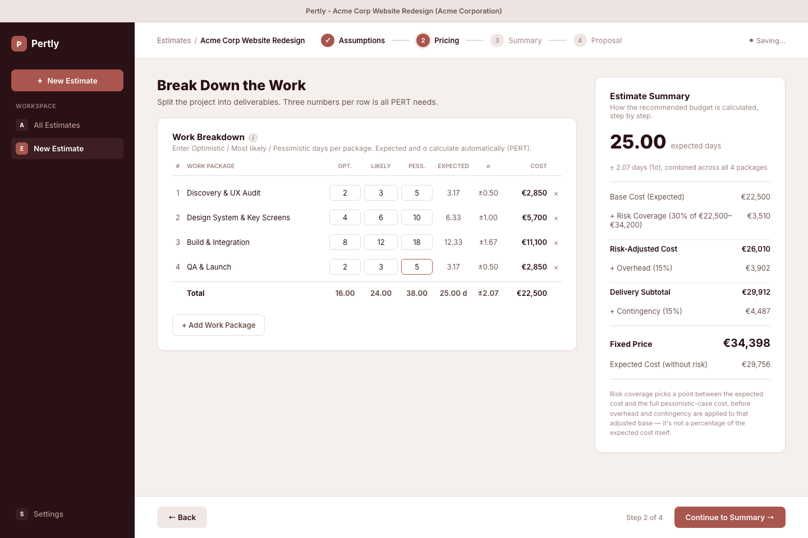
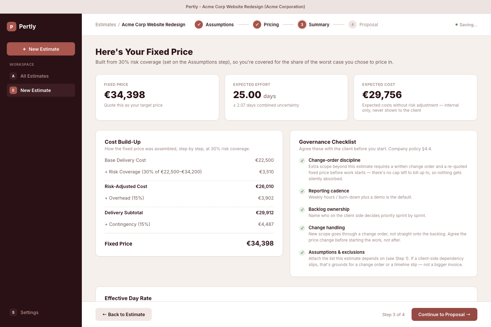
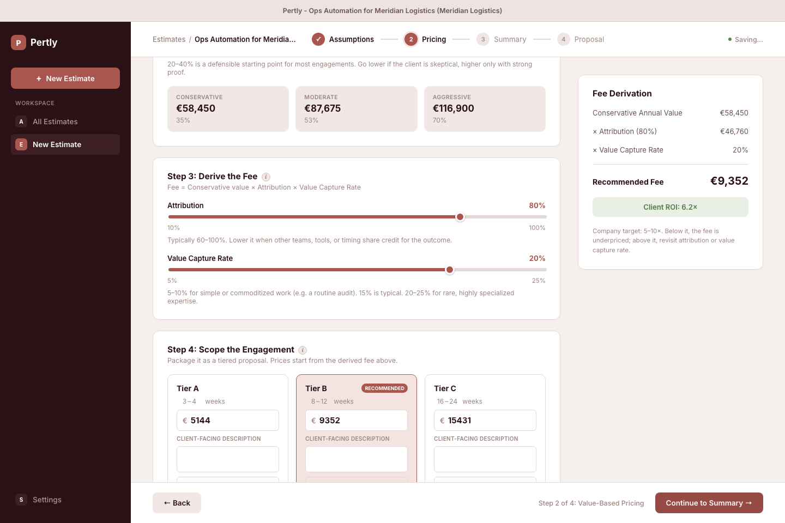
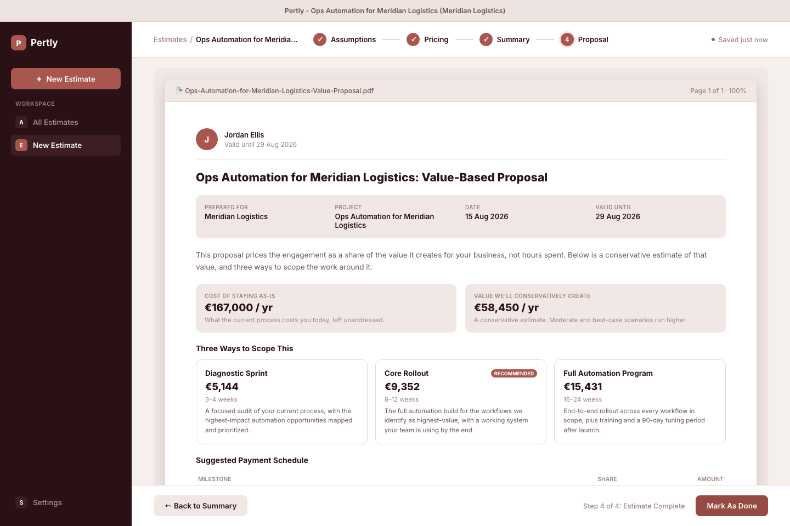

Two ways to price a project
Every estimate in Pertly picks one of two methods. Both end in the same place: a number and a proposal. They just get there differently.
Time & Materials
You break the project into deliverables and estimate each one three ways: optimistic, most likely, pessimistic. Pertly turns that into an expected effort and a confidence range, then layers on overhead and a contingency buffer. You get a recommended budget and a not-to-exceed cap: a ceiling the client can hold you to, and you can hold yourself to.


Value-Based Pricing
You quantify what the problem is costing the client today (wasted time, errors, delayed revenue), then work out a conservative, moderate, and aggressive case for how much of that you'll recover. Your fee is a share of the conservative case, checked against a target return so the client is getting a good deal and you're not leaving money on the table. It lands as a tiered proposal, so the client picks a scope, not just a price.


Which one do I use?
Rule of thumb: if you can put a number on the value, price the value. If you can't, or the scope is too fuzzy to trust that number yet, price the effort. You're not locked in; every new estimate picks fresh.